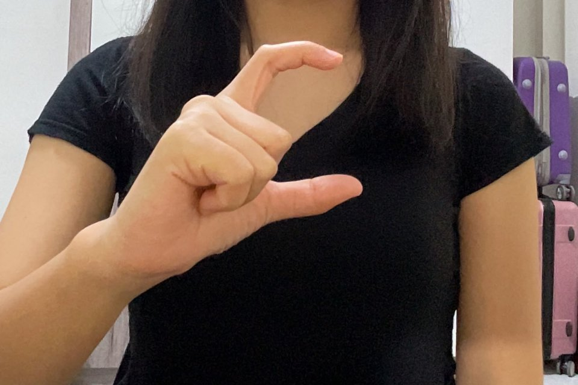

Belajar BISINDO, langsung praktik
Selamat datang kembali
Lanjutkan belajar
Kenali 30 Huruf BISINDO. Gerakkan tangan. Belajar dengan percaya diri.
Lihat contoh gesture setiap huruf, pahami bentuk tangannya, lalu praktikkan di depan kamera. IsyaratKu mengenali gesture kamu secara langsung.
- Mulai Belajar progres disimpan di browser ini, bisa dilanjutkan kapan saja.
- Tamu coba dulu tanpa nama; progres hilang saat tab ditutup.
Tanpa akun. Tidak ada data yang dikirim ke server.
26
huruf BISINDO dengan foto contoh
Real-time
pengenalan gesture melalui kamera
0 akun
langsung pakai, progres di perangkatmu
Cara kerja
Pahami dulu, baru praktik
Setiap huruf melewati tiga tahap. Progresmu terlihat di dashboard sehingga kamu tahu huruf mana yang perlu diulang.
-
01

Lihat contoh
Buka huruf dan perhatikan foto gesture serta langkah-langkahnya.
-
02
Tandai paham
Tekan “Saya sudah memahami” setelah bentuk tangannya jelas.
-
03
Praktik di kamera
Peragakan huruf sampai sistem mengenalinya, lalu lanjut ke huruf berikutnya.